MIJN FESTIVALJAREN · 1994—2019
Eenentwintig keer
Lowlands.
Van de tweede editie tot 2019: de jaren waarin ik erbij was. Per editie een affiche of archiefbeeld en een ruime selectie artiesten. Klik op het beeld om het te vergroten.
De edities
21 festivaljaren
Zoekt in de artiesten die op deze pagina staan en in de jaartallen.
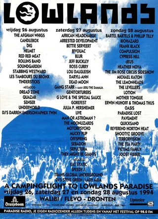
Vergroot affiche1994Bekijk affiche ↗Oasis · Jeff Buckley · Blur · Underworld · The Offspring · dEUS · Live · Life Of Agony · Cypress Hill · Paradise Lost · Heather Nova · Motorpsycho · The Levellers · Biohazard · Tindersticks · Helmet · Gorefest · The Afghan Whigs · G. L83: Love & Special Sauce · Reverend Horton Heat · Pavement (USA) · Sebadoh · Speedy J · Frank Black · Rollins Band · Morphine · Dead Moon · The Lemonheads · Gang Starr · 35007 · Daryll-Ann
Alle artiesten bij Festivalinfo ↗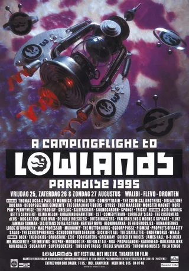
Vergroot affiche1995Bekijk affiche ↗The Prodigy · Green Day · Radiohead · Beck · Foo Fighters · dEUS · Heideroosjes · The Chemical Brothers · NOFX · Underworld · Pennywise · Soundgarden · Sick Of It All · Theo Maassen · Kyuss · Monster Magnet · Silverchair · Heather Nova · Osdorp Posse · The Melvins · Tricky · The Skatalites · Dog Eat Dog · Mudhoney · Hallo Venray · No Fun At All · Shellac · Yo La Tengo
Alle artiesten bij Festivalinfo ↗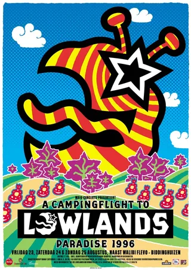
Vergroot affiche1996Bekijk affiche ↗Björk · Sonic Youth · Garbage · Ash · Korn · The Offspring · Weezer · Bush · Lamb (UK) · Social Distortion · Type O Negative · The Gathering · Fun Lovin' Criminals · Supergrass · Kula Shaker · Tricky · Van Dik Hout · Urban Dance Squad · Sparklehorse · Tracy Bonham · Ash (UK) · Prong · Dick Dale · Undeclinable Ambuscade · The Posies · Sebadoh · Speedy J · The Young Gods · Beatbusters · Tortoise · Stereolab
Alle artiesten bij Festivalinfo ↗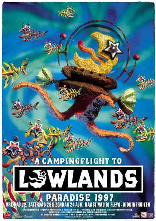
Vergroot affiche1997Bekijk affiche ↗Foo Fighters · Blur · The Chemical Brothers · De Heideroosjes · Rammstein · Blink-182 · dEUS · Heideroosjes · Pennywise · Skunk Anansie · Faith No More · Mogwai · Rowwen Heze · Sick Of It All · Millencolin · Life Of Agony · Agnostic Front · Laurent Garnier · Blonde Redhead · Kula Shaker · The Cardigans · Backfire! · Karma To Burn · Sixteen Horsepower · Fountains of Wayne · The Jon Spencer Blues Explosion · Jeff Mills · Rollins Band · The Paladins · The Lemonheads · Dreadzone
Alle artiesten bij Festivalinfo ↗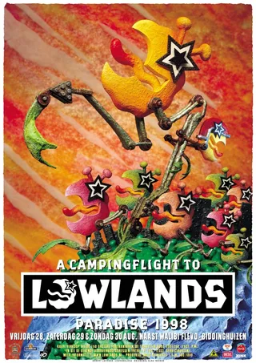
Vergroot affiche1998Bekijk affiche ↗Faithless · Junkie XL · Fatboy Slim · Deftones · Green Day · Portishead · Beastie Boys · Rancid · PJ Harvey · Basement Jaxx · Mogwai · Therapy? · BZB (Band Zonder Banaan) · Monster Magnet · Heather Nova · Fun Lovin' Criminals · Supergrass · Laurent Garnier · The Toy Dolls · Richie Hawtin · The Specials · Gomez · The Toasters · Undeclinable Ambuscade · Yo La Tengo · Grandaddy · Skik · Kent · The Ex
Alle artiesten bij Festivalinfo ↗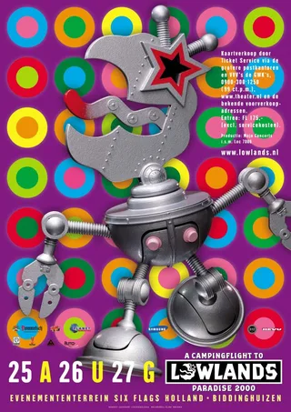
Vergroot affiche2000Bekijk affiche ↗Blink-182 · Cypress Hill · Muse · Underworld · Coldplay · Within Temptation · HIM · Deftones · Limp Bizkit · Krezip · Guano Apes · Therapy? · The Gathering · Heather Nova · Motorpsycho · Osdorp Posse · Feeder · Green Lizard · No Use For A Name · Keith Caputo · Das Pop · De La Soul · Reverend Horton Heat · Kosheen · Orishas · Kelis · Ween · Grandaddy · Laidback Luke
Alle artiesten bij Festivalinfo ↗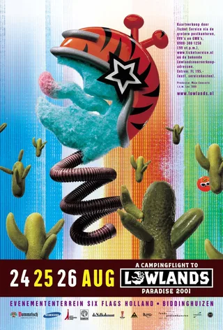
Vergroot affiche2001Bekijk affiche ↗Manu Chao · Muse · Placebo · Pulp · The Prodigy · Placebo (UK) · System Of A Down · Anouk · Dropkick Murphys · The Hives · Heideroosjes · Eels · 3 Doors Down · Live · Less Than Jake · Di-rect · Ignite · After Forever · Zebrahead · Reel Big Fish · Fear Factory · Mogwai · Beef · Zita Swoon · Johan · Hooverphonic · Zero 7 · Madrugada · Relax · Michael Franti & Spearhead · Starsailor · I am Kloot
Alle artiesten bij Festivalinfo ↗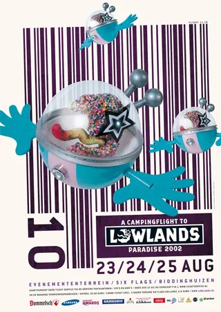
Vergroot affiche2002Bekijk affiche ↗Korn · Underworld · Nickelback · Brainpower · Flogging Molly · Within Temptation · Incubus · Danko Jones · Jimmy Eat World · Dimmu Borgir · Peter Pan Speedrock · Röyksopp · Opgezwolle · The Dandy Warhols · Black Rebel Motorcycle Club · Jaya The Cat · Beef · New Found Glory · Zita Swoon · The Sheer · Tiësto · Ozark Henry · DJ Shadow · Relax · Junkie XL · Motorpsycho · Face Tomorrow · Green Lizard · VNV Nation · Zornik · Puddle Of Mudd
Alle artiesten bij Festivalinfo ↗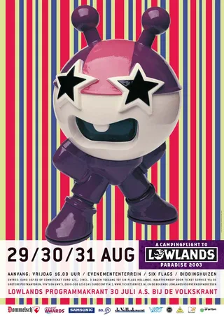
Vergroot affiche2003Bekijk affiche ↗Beck · Live · Foo Fighters · PJ Harvey · Kings of Leon · Nightwish · Interpol · Eels · Sum 41 · Saybia · AFI · Voicst · Less Than Jake · Stereophonics · Guano Apes · The Mars Volta · Rancid · Staind · Reel Big Fish · Mando Diao · Goldfrapp · Kaizers Orchestra · The Kills · Audio Bullys · Lamb (UK) · BZB (Band Zonder Banaan) · Lagwagon · Electric Six · Sugarcult · Moloko
Alle artiesten bij Festivalinfo ↗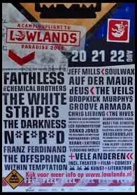
Vergroot affiche2004Bekijk affiche ↗The White Stripes · Franz Ferdinand · Faithless · dEUS · Flogging Molly · Within Temptation · Dropkick Murphys · Papa Roach · The Hives · The Offspring · Keane · Heideroosjes · The Chemical Brothers · Epica · Danko Jones · Razorlight · The Bloodhound Gang · Opgezwolle · LCD Soundsystem · Novastar · N*E*R*D* · Scissor Sisters · Groove Armada · Velvet Revolver · Mala Vita · Oceansize · Textures · Gabriel Rios · The Sheer · The Dillinger Escape Plan
Alle artiesten bij Festivalinfo ↗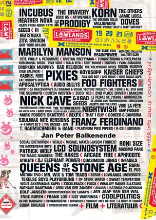
Vergroot affiche2005Bekijk affiche ↗Pixies · Nick Cave · Foo Fighters · Arcade Fire · Editors · Queens Of The Stone Age · The Prodigy · Kaiser Chiefs · Korn · Incubus · Franz Ferdinand · Dropkick Murphys · Nightwish · Racoon · Marilyn Manson · Apocalyptica · Maxïmo Park · De Jeugd Van Tegenwoordig · Bad Religion · Voicst · Röyksopp · Infadels · LCD Soundsystem · Nick Cave & the Bad Seeds · Pete Philly & Perquisite · Róisín Murphy · Jamie Lidell · Coheed and Cambria · The Subways · KT Tunstall
Alle artiesten bij Festivalinfo ↗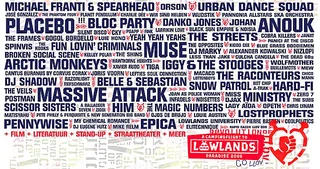
Vergroot affiche2006Bekijk affiche ↗Massive Attack · Muse · Placebo · Arctic Monkeys · The Kooks · Placebo (UK) · Snow Patrol · Anouk · Bloc Party · Pendulum · Wolfmother · Lostprophets · HIM · Opeth · Paolo Nutini · Epica · Panic! At The Disco · Spinvis · Gogol Bordello · Danko Jones · Razorlight · The Raconteurs · Less Than Jake · Mastodon · Pennywise · Opgezwolle · Infadels · Iggy & The Stooges · Pete Philly & Perquisite · The Veils · Scissor Sisters
Alle artiesten bij Festivalinfo ↗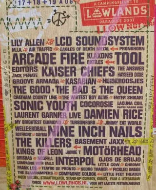
Vergroot affiche2007Bekijk affiche ↗Tool · Arcade Fire · Editors · The Killers · TOOL · Kings of Leon · Kaiser Chiefs · Pendulum · Nine Inch Nails · Interpol · Enter Shikari · Damien Rice · Heideroosjes · Kasabian · Eagles of Death Metal · Saybia · Delain · Mika · Jimmy Eat World · Motörhead · Kate Nash · The Shins · Moke · Lacuna Coil · Biffy Clyro · The Pigeon Detectives · Funeral For A Friend · After Forever · C-Mon & Kypski · The View · LCD Soundsystem
Alle artiesten bij Festivalinfo ↗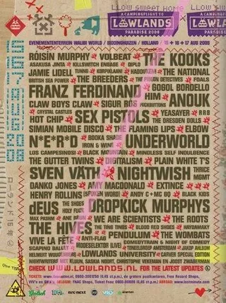
Vergroot affiche2008Bekijk affiche ↗Sigur Rós · Underworld · Editors · dEUS · The Kooks · Anouk · Pendulum · Franz Ferdinand · Volbeat · Dropkick Murphys · Nightwish · The Hives · HIM · Elbow · The Wombats · MGMT · Killswitch Engage · The National · White Lies · Gogol Bordello · Danko Jones · De Jeugd Van Tegenwoordig · Korpiklaani · Blood Red Shoes · The Fratellis · Mindless Self Indulgence · The Pigeon Detectives · Foals · Infadels · The Ting Tings
Alle artiesten bij Festivalinfo ↗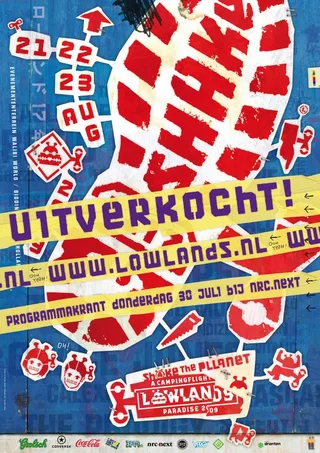
Vergroot archiefbeeldFaith No More · The Prodigy · Grace Jones · Arctic Monkeys · Kaiser Chiefs · Bloc Party · Enter Shikari · Opeth · Paolo Nutini · Kasabian · Sonata Arctica · Eagles of Death Metal · Maxïmo Park · White Lies · Florence + The Machine · Vampire Weekend · Razorlight · Bring Me The Horizon · De Staat · Delain · Them Crooked Vultures · Bon Iver · Klaxons · Moke · Beirut · The Blackout · Boys Noize · Patrick Watson · Lily Allen · Basement Jaxx · The Whitest Boy Alive
Alle artiesten bij Festivalinfo ↗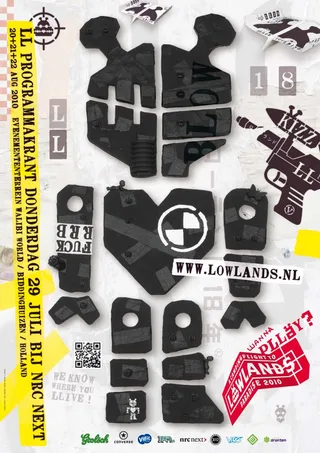
Vergroot archiefbeeldMassive Attack · Queens of the Stone Age · Placebo · The National · Queens Of The Stone Age · The Kooks · Placebo (UK) · Snow Patrol · Anouk · Pendulum · Thirty Seconds to Mars · Mumford & Sons · Blink-182 · NOFX · Triggerfinger · Blood Red Shoes · Air · The Gaslight Anthem · Serj Tankian · The XX · Finntroll · Foals · The Ting Tings · LCD Soundsystem · Deadmau5 · All Time Low · Selah Sue · Groove Armada · Two Door Cinema Club · Tame Impala · Band Of Horses · Go Back To The Zoo
Alle artiesten bij Festivalinfo ↗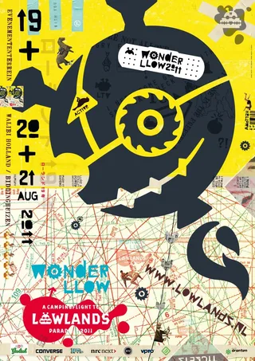
Vergroot affiche2011Bekijk affiche ↗dEUS · Arctic Monkeys · Elbow · Interpol · Rise Against · Flogging Molly · Within Temptation · The Offspring · The Wombats · De Jeugd Van Tegenwoordig · De Staat · Fleet Foxes · Skunk Anansie · The View · Trentemoller · Aphex Twin · Selah Sue · Ben Howard · DeWolff · The Kills · Skrillex · Seasick Steve · Crystal Castles · Fink · Underoath · Babylon Circus · Paul Kalkbrenner · Chase & Status · James Blake · Crystal Fighters
Alle artiesten bij Festivalinfo ↗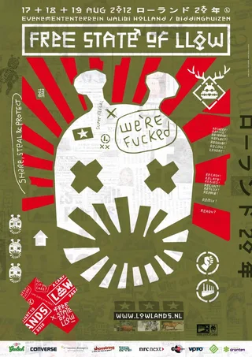
Vergroot affiche2012Bekijk affiche ↗Foo Fighters · The xx · The Black Keys · The Kyteman Orchestra · Bloc Party · Billy Talent · Enter Shikari · Heideroosjes · Kasabian · Triggerfinger · Spinvis · Eagles of Death Metal · The Gaslight Anthem · The Shins · The XX · Patrick Watson · The Whitest Boy Alive · Alt-J · Ben Howard · Two Door Cinema Club · Skrillex · Ed Sheeran · Feist · Me First and the Gimme Gimmes · Go Back To The Zoo · Blaudzun · The Maccabees · Ane Brun · Hot Chip · Moss · Santigold · Wilco
Alle artiesten bij Festivalinfo ↗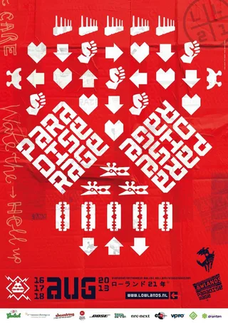
Vergroot affiche2013Bekijk affiche ↗Nick Cave · Nine Inch Nails · Slayer · Editors · Franz Ferdinand · Bullet For My Valentine · Fall Out Boy · De Jeugd Van Tegenwoordig · Biffy Clyro · Foals · Imagine Dragons · Gojira · The Veils · Tame Impala · Band Of Horses · Seasick Steve · Bonobo · The Opposites · Noisia · The Knife · Hurts · Chase & Status · James Blake · Crystal Fighters · Balthazar (Be) · Noah and the Whale · John Coffey · Daughter · Dizzee Rascal · Jake Bugg
Alle artiesten bij Festivalinfo ↗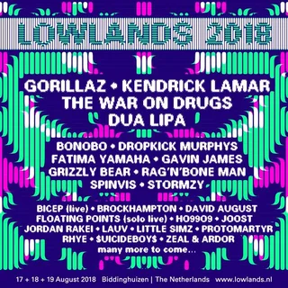
Vergroot affiche2018Bekijk affiche ↗Gorillaz · Kendrick Lamar · The War on Drugs · Dua Lipa · Dropkick Murphys · The Wombats · Spinvis · Gogol Bordello · De Jeugd Van Tegenwoordig · De Staat · N*E*R*D* · DeWolff · Bonobo · Blaudzun · The War On Drugs · Grizzly Bear · Eefje de Visser · Patti Smith · Tom Odell · Death From Above · Richie Hawtin · Miles Kane · Amenra · Patrick Laureij · King Gizzard & The Lizard Wizard · De La Soul · Nils Frahm · Joost · James Bay · Sam Fender · Rag'n'Bone Man
Alle artiesten bij Festivalinfo ↗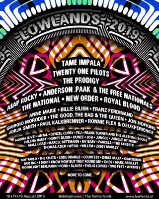
Vergroot affiche2019Bekijk affiche ↗New Order · The National · Tame Impala · De Staat · Franz Ferdinand · Paul Kalkbrenner · James Blake · The Vaccines · Royal Blood · The Good, The Bad & The Queen · Twenty One Pilots · Modeselektor · Bear's Den · Idles · Billie Eilish · MY BABY · Joost · Ziggy Marley · Jungle By Night · Camo & Krooked · Thomas Azier · Turnstile · Weval · Peter Pannekoek · Jon Hopkins · Jungle · Ronnie Flex · Frank Turner & The Sleeping Souls · A$AP Rocky · Pond
Alle artiesten bij Festivalinfo ↗


De genoemde artiesten zijn een selectie uit de bevestigde namen, gebaseerd op Festivalinfo en Festileaks; dit zijn niet noodzakelijk de headliners. Affiches en archiefbeelden zijn afkomstig uit de collectie van Festileaks; bij 2009 en 2010 toont die bron ander archiefbeeld in plaats van een poster. De links leiden naar de overzichten van Festivalinfo met bevestigde artiesten; aankondigingen kunnen afwijken van het uiteindelijke programma. Vergelijk waar nodig met de historische posters bij Festileaks.